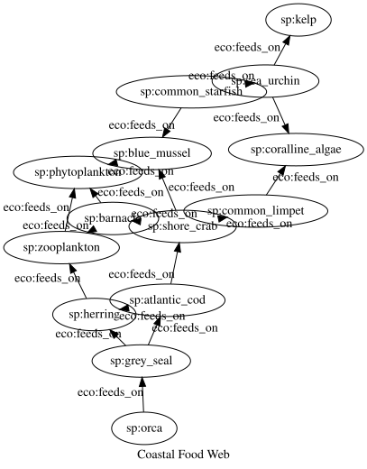

Ecological Knowledge Graphs
Simon Frost
Introduction
This vignette demonstrates how RDFLib.jl’s features work together in a realistic scientific scenario: modeling a northeastern Atlantic coastal ecosystem as a knowledge graph. We build a food web ontology, import field survey data from tabular sources, validate data quality, query trophic relationships, reason about indirect ecological interactions, and model probabilistic trophic cascades.
Features demonstrated: OWL ontology design, tabular data import, SHACL validation, SPARQL queries, property paths, Datalog reasoning, probabilistic logic (ProbLog), visualization, and graph analytics.
using RDFLib
# Helper to extract readable string from SPARQL result values
readable(x::Literal) = x.lexical
readable(x::URIRef) = split(x.value, r"[/#]")[end]
readable(x) = string(x)readable (generic function with 3 methods)1. Defining the Ecosystem Ontology
We define a lightweight ecology ontology with classes for species, habitats, and observations, plus properties for feeding relationships, habitat associations, and conservation metadata.
g = RDFGraph()
# Namespaces
eco = Namespace("http://example.org/ecology#")
sp = Namespace("http://example.org/species/")
hab = Namespace("http://example.org/habitat/")
bind!(g, "eco", eco)
bind!(g, "sp", sp)
bind!(g, "hab", hab)
# OWL classes
for cls in ["Species", "Habitat", "Observation", "TrophicLevel"]
add!(g, Triple(eco(cls), RDF.type, OWL.Class))
end
# Object properties
for (prop, dom, rng) in [
("feeds_on", "Species", "Species"),
("inhabits", "Species", "Habitat"),
("has_trophic_level", "Species", "TrophicLevel"),
("competes_with", "Species", "Species"),
("observed_species", "Observation", "Species"),
]
p = eco(prop)
add!(g, Triple(p, RDF.type, OWL.ObjectProperty))
add!(g, Triple(p, RDFS.domain, eco(dom)))
add!(g, Triple(p, RDFS.range, eco(rng)))
end
# competes_with is symmetric
add!(g, Triple(eco("competes_with"), RDF.type, OWL.SymmetricProperty))
# Datatype properties
for prop in ["common_name", "conservation_status", "typical_size_cm",
"site", "count", "method", "date"]
add!(g, Triple(eco(prop), RDF.type, OWL.DatatypeProperty))
end
println("Ontology schema: $(length(g)) triples")Ontology schema: 27 triples2. Populating the Food Web
We populate the graph with 14 species spanning five trophic levels, five coastal habitat types, and a realistic feeding network.
# Trophic levels
for tl in ["producer", "primary_consumer", "secondary_consumer",
"tertiary_consumer", "apex_predator"]
add!(g, Triple(eco(tl), RDF.type, eco("TrophicLevel")))
add!(g, Triple(eco(tl), RDFS.label, Literal(replace(tl, '_' => ' '))))
end
# Habitats
habitats = [
("pelagic", "Open water column"),
("rocky_intertidal", "Rocky shore between tides"),
("subtidal_reef", "Submerged rocky reef"),
("kelp_forest", "Dense kelp canopy and understory"),
("sandy_bottom", "Soft sediment seafloor"),
]
for (id, desc) in habitats
add!(g, Triple(hab(id), RDF.type, eco("Habitat")))
add!(g, Triple(hab(id), RDFS.label, Literal(id)))
add!(g, Triple(hab(id), RDFS.comment, Literal(desc)))
end
# Species: (id, name, trophic_level, status, size_cm, habitats)
species_data = [
("orca", "Killer Whale", "apex_predator", "Data Deficient", 700, ["pelagic"]),
("grey_seal", "Grey Seal", "tertiary_consumer", "Least Concern", 230, ["pelagic", "rocky_intertidal"]),
("atlantic_cod", "Atlantic Cod", "tertiary_consumer", "Vulnerable", 120, ["pelagic", "kelp_forest"]),
("herring", "Atlantic Herring", "secondary_consumer", "Least Concern", 35, ["pelagic"]),
("shore_crab", "Shore Crab", "secondary_consumer", "Least Concern", 8, ["rocky_intertidal", "subtidal_reef"]),
("common_starfish", "Common Starfish", "secondary_consumer", "Least Concern", 30, ["subtidal_reef", "rocky_intertidal"]),
("blue_mussel", "Blue Mussel", "primary_consumer", "Least Concern", 10, ["rocky_intertidal"]),
("common_limpet", "Common Limpet", "primary_consumer", "Least Concern", 6, ["rocky_intertidal"]),
("sea_urchin", "Sea Urchin", "primary_consumer", "Least Concern", 8, ["subtidal_reef", "kelp_forest"]),
("barnacle", "Acorn Barnacle", "primary_consumer", "Least Concern", 2, ["rocky_intertidal"]),
("zooplankton", "Zooplankton", "primary_consumer", "Not Evaluated", 0.1, ["pelagic"]),
("kelp", "Oarweed Kelp", "producer", "Least Concern", 150, ["subtidal_reef", "kelp_forest"]),
("phytoplankton", "Phytoplankton", "producer", "Not Evaluated", 0.01, ["pelagic"]),
("coralline_algae", "Coralline Algae", "producer", "Least Concern", 5, ["rocky_intertidal", "subtidal_reef"]),
]
for (id, name, tl, status, size, habs) in species_data
s = sp(id)
add!(g, Triple(s, RDF.type, eco("Species")))
add!(g, Triple(s, eco("common_name"), Literal(name)))
add!(g, Triple(s, eco("has_trophic_level"), eco(tl)))
add!(g, Triple(s, eco("conservation_status"), Literal(status)))
add!(g, Triple(s, eco("typical_size_cm"), Literal(size)))
for h in habs
add!(g, Triple(s, eco("inhabits"), hab(h)))
end
end
# Feeding relationships (predator → prey)
food_web = [
"orca" => "grey_seal",
"grey_seal" => "atlantic_cod",
"grey_seal" => "herring",
"atlantic_cod" => "herring",
"atlantic_cod" => "shore_crab",
"herring" => "zooplankton",
"shore_crab" => "blue_mussel",
"shore_crab" => "barnacle",
"shore_crab" => "common_limpet",
"common_starfish" => "blue_mussel",
"common_starfish" => "sea_urchin",
"sea_urchin" => "kelp",
"sea_urchin" => "coralline_algae",
"blue_mussel" => "phytoplankton",
"barnacle" => "phytoplankton",
"barnacle" => "zooplankton",
"zooplankton" => "phytoplankton",
"common_limpet" => "coralline_algae",
]
for (predator, prey) in food_web
add!(g, Triple(sp(predator), eco("feeds_on"), sp(prey)))
end
# Competition
add!(g, Triple(sp("blue_mussel"), eco("competes_with"), sp("barnacle")))
add!(g, Triple(sp("sea_urchin"), eco("competes_with"), sp("common_limpet")))
println("Ecosystem: $(length(g)) triples — " *
"$(length(species_data)) species, $(length(food_web)) feeding links")Ecosystem: 163 triples — 14 species, 18 feeding links3. Importing Field Survey Data
Field ecologists collect survey data in spreadsheets. We use tabular mapping to import a DataFrame of species observations directly into the knowledge graph.
surveys = [
(id=1, species="blue_mussel", site="St Andrews", count=342, method="quadrat", date="2024-06-15"),
(id=2, species="barnacle", site="St Andrews", count=891, method="quadrat", date="2024-06-15"),
(id=3, species="common_limpet", site="St Andrews", count=156, method="quadrat", date="2024-06-15"),
(id=4, species="shore_crab", site="St Andrews", count=23, method="visual", date="2024-06-15"),
(id=5, species="common_starfish", site="St Andrews", count=7, method="visual", date="2024-06-15"),
(id=6, species="blue_mussel", site="Arbroath", count=567, method="quadrat", date="2024-06-15"),
(id=7, species="barnacle", site="Arbroath", count=1204, method="quadrat", date="2024-06-15"),
(id=8, species="sea_urchin", site="Arbroath", count=45, method="quadrat", date="2024-06-15"),
(id=9, species="kelp", site="Arbroath", count=12, method="quadrat", date="2024-06-15"),
(id=10, species="coralline_algae", site="Arbroath", count=89, method="quadrat", date="2024-06-15"),
(id=11, species="herring", site="Bell Rock", count=250, method="trawl", date="2024-06-15"),
(id=12, species="atlantic_cod", site="Bell Rock", count=18, method="trawl", date="2024-06-15"),
(id=13, species="grey_seal", site="Bell Rock", count=3, method="visual", date="2024-06-15"),
(id=14, species="phytoplankton", site="Bell Rock", count=1500, method="sample", date="2024-06-15"),
(id=15, species="zooplankton", site="Bell Rock", count=800, method="sample", date="2024-06-15"),
(id=16, species="blue_mussel", site="Crail", count=423, method="quadrat", date="2024-06-15"),
(id=17, species="shore_crab", site="Crail", count=31, method="visual", date="2024-06-15"),
(id=18, species="common_starfish", site="Crail", count=5, method="visual", date="2024-06-15"),
(id=19, species="sea_urchin", site="Crail", count=38, method="quadrat", date="2024-06-15"),
(id=20, species="barnacle", site="Crail", count=756, method="quadrat", date="2024-06-15"),
]
# Add species URI column for linking to species nodes
surveys_with_uri = [(; r..., species_uri="http://example.org/species/" * r.species) for r in surveys]
m = RDFMapping(graph=g)
tpl = RDFTemplate(
subject = :id,
subject_prefix = "http://example.org/observation/",
properties = [
(eco("observed_species"), :species_uri, IRIColumn()),
(eco("site"), :site, AutoColumn()),
(eco("count"), :count, LiteralColumn(XSD.integer)),
(eco("method"), :method, AutoColumn()),
(eco("date"), :date, LiteralColumn(XSD.date)),
],
types = [eco("Observation")]
)
before = length(g)
rdf_map!(m, surveys_with_uri, tpl)
println("Imported $(length(g) - before) observation triples from $(length(surveys)) records")
println("Total knowledge graph: $(length(g)) triples")Imported 120 observation triples from 20 records
Total knowledge graph: 283 triples4. Validating Data Quality with SHACL
Before analysis, we validate that observations conform to a SHACL shapes schema — every observation must have a linked species, a non-negative integer count, and a date.
shapes_ttl = """
@prefix sh: <http://www.w3.org/ns/shacl#> .
@prefix eco: <http://example.org/ecology#> .
@prefix xsd: <http://www.w3.org/2001/XMLSchema#> .
eco:ObservationShape a sh:NodeShape ;
sh:targetClass eco:Observation ;
sh:property [
sh:path eco:observed_species ;
sh:minCount 1 ;
sh:maxCount 1 ;
sh:nodeKind sh:IRI ;
] ;
sh:property [
sh:path eco:count ;
sh:minCount 1 ;
sh:datatype xsd:integer ;
] ;
sh:property [
sh:path eco:date ;
sh:minCount 1 ;
] .
"""
report = rdf_validate(m, shapes_ttl)
println("Valid survey data — conforms: $(report.conforms)")Valid survey data — conforms: trueNow add an incomplete observation and see SHACL catch the errors:
bad = URIRef("http://example.org/observation/incomplete")
add!(g, Triple(bad, RDF.type, eco("Observation")))
add!(g, Triple(bad, eco("site"), Literal("Unknown Site")))
report2 = rdf_validate(m, shapes_ttl)
println("After adding incomplete observation:")
println(" Conforms: $(report2.conforms)")
println(" Violations: $(length(report2.results))")
for r in report2.results
println(" ✗ $(r.message)")
end
# Clean up
remove!(g, Triple(bad, RDF.type, eco("Observation")))
remove!(g, Triple(bad, eco("site"), Literal("Unknown Site")))After adding incomplete observation:
Conforms: false
Violations: 3
✗ Expected at least 1 values for http://example.org/ecology#observed_species, got 0
✗ Expected at least 1 values for http://example.org/ecology#count, got 0
✗ Expected at least 1 values for http://example.org/ecology#date, got 0
RDFGraph (283 triples)5. Querying the Ecosystem with SPARQL
Species by trophic level
results = sparql_query(g, """
PREFIX eco: <http://example.org/ecology#>
SELECT ?name ?level WHERE {
?s a eco:Species .
?s eco:common_name ?name .
?s eco:has_trophic_level ?tl .
?tl rdfs:label ?level .
}
ORDER BY ?level ?name
""")
for row in results
println(" $(rpad(readable(row["name"]), 20)) $(readable(row["level"]))")
endMost observed species
results = sparql_query(g, """
PREFIX eco: <http://example.org/ecology#>
SELECT ?name ?site ?count WHERE {
?obs a eco:Observation .
?obs eco:observed_species ?species .
?species eco:common_name ?name .
?obs eco:site ?site .
?obs eco:count ?count .
}
ORDER BY DESC(?count)
""")
println("Top 5 observations by abundance:")
for row in Iterators.take(results, 5)
println(" $(rpad(readable(row["name"]), 18)) at $(rpad(readable(row["site"]), 12)) n=$(readable(row["count"]))")
endTop 5 observations by abundance:
Phytoplankton at Bell Rock n=1500
Acorn Barnacle at Arbroath n=1204
Acorn Barnacle at St Andrews n=891
Zooplankton at Bell Rock n=800
Acorn Barnacle at Crail n=756Vulnerable species and their predators
results = sparql_query(g, """
PREFIX eco: <http://example.org/ecology#>
SELECT ?vulnerable ?predator_name WHERE {
?s eco:conservation_status "Vulnerable" .
?s eco:common_name ?vulnerable .
?pred eco:feeds_on ?s .
?pred eco:common_name ?predator_name .
}
""")
println("Predators of vulnerable species:")
for row in results
println(" $(readable(row["predator_name"])) → $(readable(row["vulnerable"]))")
endPredators of vulnerable species:
Grey Seal → Atlantic Cod6. Food Chain Analysis with Property Paths
Property paths trace multi-step feeding relationships without recursive queries.
All species in the orca’s transitive food chain
results = sparql_query(g, """
PREFIX eco: <http://example.org/ecology#>
PREFIX sp: <http://example.org/species/>
SELECT ?prey_name WHERE {
sp:orca eco:feeds_on+ ?prey .
?prey eco:common_name ?prey_name .
}
ORDER BY ?prey_name
""")
println("The orca's transitive food chain ($(length(results)) species):")
for row in results
println(" • $(readable(row["prey_name"]))")
endThe orca's transitive food chain (10 species):
• Acorn Barnacle
• Atlantic Cod
• Atlantic Herring
• Blue Mussel
• Common Limpet
• Coralline Algae
• Grey Seal
• Phytoplankton
• Shore Crab
• ZooplanktonWhich species ultimately depend on phytoplankton?
results = sparql_query(g, """
PREFIX eco: <http://example.org/ecology#>
PREFIX sp: <http://example.org/species/>
SELECT ?name WHERE {
?s eco:feeds_on+ sp:phytoplankton .
?s eco:common_name ?name .
}
ORDER BY ?name
""")
println("Species with transitive dependency on phytoplankton ($(length(results))):")
for row in results
println(" • $(readable(row["name"]))")
endSpecies with transitive dependency on phytoplankton (9):
• Acorn Barnacle
• Atlantic Cod
• Atlantic Herring
• Blue Mussel
• Common Starfish
• Grey Seal
• Killer Whale
• Shore Crab
• ZooplanktonAll consumers of kelp (direct and indirect)
results = sparql_query(g, """
PREFIX eco: <http://example.org/ecology#>
PREFIX sp: <http://example.org/species/>
SELECT ?name WHERE {
?s eco:feeds_on+ sp:kelp .
?s eco:common_name ?name .
}
ORDER BY ?name
""")
println("Direct and indirect consumers of kelp:")
for row in results
println(" • $(readable(row["name"]))")
endDirect and indirect consumers of kelp:
• Common Starfish
• Sea Urchin7. Deriving Ecological Relationships with Datalog
We use Datalog reasoning to compute derived relationships: transitive trophic dependency and shared-prey competition.
n3_food_web = """
@prefix eco: <http://example.org/ecology#> .
@prefix sp: <http://example.org/species/> .
sp:orca eco:feeds_on sp:grey_seal .
sp:grey_seal eco:feeds_on sp:atlantic_cod .
sp:grey_seal eco:feeds_on sp:herring .
sp:atlantic_cod eco:feeds_on sp:herring .
sp:atlantic_cod eco:feeds_on sp:shore_crab .
sp:herring eco:feeds_on sp:zooplankton .
sp:shore_crab eco:feeds_on sp:blue_mussel .
sp:shore_crab eco:feeds_on sp:barnacle .
sp:shore_crab eco:feeds_on sp:common_limpet .
sp:common_starfish eco:feeds_on sp:blue_mussel .
sp:common_starfish eco:feeds_on sp:sea_urchin .
sp:sea_urchin eco:feeds_on sp:kelp .
sp:sea_urchin eco:feeds_on sp:coralline_algae .
sp:blue_mussel eco:feeds_on sp:phytoplankton .
sp:barnacle eco:feeds_on sp:phytoplankton .
sp:barnacle eco:feeds_on sp:zooplankton .
sp:zooplankton eco:feeds_on sp:phytoplankton .
sp:common_limpet eco:feeds_on sp:coralline_algae .
# Transitive trophic dependency
{ ?x eco:feeds_on ?y } => { ?x eco:depends_on ?y } .
{ ?x eco:depends_on ?y . ?y eco:depends_on ?z } => { ?x eco:depends_on ?z } .
# Shared-prey relationship (potential competitors)
{ ?x eco:feeds_on ?z . ?y eco:feeds_on ?z } => { ?x eco:shares_prey_with ?y } .
"""
g_dl = parse_rdf(n3_food_web, N3Format())
println("Before reasoning: $(length(g_dl)) triples")
g_inferred = datalog_reason(g_dl)
println("After reasoning: $(length(g_inferred)) triples")
dep_count = length(collect(triples(g_inferred, (nothing, eco("depends_on"), nothing))))
feed_count = length(collect(triples(g_inferred, (nothing, eco("feeds_on"), nothing))))
share_count = length(collect(triples(g_inferred, (nothing, eco("shares_prey_with"), nothing))))
println("\nDirect feeding links: $feed_count")
println("Transitive dependencies: $dep_count ($(dep_count - feed_count) new)")
println("Shared-prey relationships: $share_count")Before reasoning: 21 triples
After reasoning: 90 triples
Direct feeding links: 18
Transitive dependencies: 47 (29 new)
Shared-prey relationships: 25What does the orca transitively depend on?
orca_deps = [t.object for t in triples(g_inferred, (sp("orca"), eco("depends_on"), nothing))]
println("Orca depends on $(length(orca_deps)) species (directly or indirectly):")
for dep in sort(orca_deps; by=x -> split(string(x), '/')[end])
println(" • $(split(string(dep), '/')[end])")
endOrca depends on 10 species (directly or indirectly):
• atlantic_cod
• barnacle
• blue_mussel
• common_limpet
• coralline_algae
• grey_seal
• herring
• phytoplankton
• shore_crab
• zooplanktonWhich species share prey (potential competitors)?
seen = Set{String}()
for t in triples(g_inferred, (nothing, eco("shares_prey_with"), nothing))
a = split(string(t.subject), '/')[end]
b = split(string(t.object), '/')[end]
a == b && continue
pair = a < b ? "$a ↔ $b" : "$b ↔ $a"
pair in seen && continue
push!(seen, pair)
end
println("Species pairs sharing prey ($(length(seen)) pairs):")
for pair in sort(collect(seen))
println(" • $pair")
endSpecies pairs sharing prey (7 pairs):
• atlantic_cod ↔ grey_seal
• barnacle ↔ blue_mussel
• barnacle ↔ herring
• barnacle ↔ zooplankton
• blue_mussel ↔ zooplankton
• common_limpet ↔ sea_urchin
• common_starfish ↔ shore_crab8. Probabilistic Trophic Cascades with ProbLog
The classic sea otter → sea urchin → kelp trophic cascade: when apex predators are removed, herbivore populations explode and primary producers collapse. We model this probabilistically with ProbLog.
base_program = """
0.3::otters_present.
0.85::urchins_present.
0.9::kelp_present.
0.7::mussels_present.
urchins_controlled :- otters_present.
urchin_barren :- urchins_present, \\+urchins_controlled.
kelp_forest :- kelp_present, \\+urchin_barren.
healthy_reef :- kelp_forest, mussels_present.
degraded_reef :- urchin_barren.
query(urchin_barren).
query(kelp_forest).
query(healthy_reef).
query(degraded_reef).
"""
results = problog_query(base_program)
println("Baseline ecosystem probabilities:")
for key in ["urchin_barren", "kelp_forest", "healthy_reef", "degraded_reef"]
haskey(results, key) && println(" $(rpad(key, 16)) = $(round(results[key]; digits=4))")
endBaseline ecosystem probabilities:
urchin_barren = 0.595
kelp_forest = 0.3645
healthy_reef = 0.2552
degraded_reef = 0.595Scenario: Otters present (conservation success)
With otters controlling the urchin population, the kelp forest thrives:
with_otters = """
0.3::otters_present.
0.85::urchins_present.
0.9::kelp_present.
0.7::mussels_present.
urchins_controlled :- otters_present.
urchin_barren :- urchins_present, \\+urchins_controlled.
kelp_forest :- kelp_present, \\+urchin_barren.
healthy_reef :- kelp_forest, mussels_present.
degraded_reef :- urchin_barren.
query(urchin_barren).
query(kelp_forest).
query(healthy_reef).
query(degraded_reef).
evidence(otters_present, true).
"""
r_otters = problog_query(with_otters)
println("With otters present (conservation success):")
for key in ["urchin_barren", "kelp_forest", "healthy_reef", "degraded_reef"]
haskey(r_otters, key) && println(" $(rpad(key, 16)) = $(round(r_otters[key]; digits=4))")
endWith otters present (conservation success):
urchin_barren = 0.0
kelp_forest = 0.9
healthy_reef = 0.63
degraded_reef = 0.0Scenario: Otters absent (overhunting/decline)
Without otters, urchins overgraze the kelp — the ecosystem degrades:
without_otters = """
0.3::otters_present.
0.85::urchins_present.
0.9::kelp_present.
0.7::mussels_present.
urchins_controlled :- otters_present.
urchin_barren :- urchins_present, \\+urchins_controlled.
kelp_forest :- kelp_present, \\+urchin_barren.
healthy_reef :- kelp_forest, mussels_present.
degraded_reef :- urchin_barren.
query(urchin_barren).
query(kelp_forest).
query(healthy_reef).
query(degraded_reef).
evidence(otters_present, false).
"""
r_no_otters = problog_query(without_otters)
println("Without otters (population decline):")
for key in ["urchin_barren", "kelp_forest", "healthy_reef", "degraded_reef"]
haskey(r_no_otters, key) && println(" $(rpad(key, 16)) = $(round(r_no_otters[key]; digits=4))")
endWithout otters (population decline):
urchin_barren = 0.85
kelp_forest = 0.135
healthy_reef = 0.0945
degraded_reef = 0.85Comparing scenarios
println("Impact of otter conservation on ecosystem health:\n")
println(" $(rpad("Indicator", 18)) $(rpad("Otters present", 16)) $(rpad("Otters absent", 16)) Change")
println(" $("-"^66)")
for key in ["urchin_barren", "kelp_forest", "healthy_reef", "degraded_reef"]
p_yes = get(r_otters, key, 0.0)
p_no = get(r_no_otters, key, 0.0)
delta = p_yes - p_no
sign = delta >= 0 ? "+" : ""
println(" $(rpad(key, 18)) $(rpad(round(p_yes; digits=4), 16)) $(rpad(round(p_no; digits=4), 16)) $(sign)$(round(delta; digits=4))")
endImpact of otter conservation on ecosystem health:
Indicator Otters present Otters absent Change
------------------------------------------------------------------
urchin_barren 0.0 0.85 -0.85
kelp_forest 0.9 0.135 +0.765
healthy_reef 0.63 0.0945 +0.5355
degraded_reef 0.0 0.85 -0.859. Visualization and Graph Analytics
Graph statistics
stats = graph_stats(g)
println("Knowledge graph summary:")
println(" Total triples: $(stats.triples)")
println(" Unique subjects: $(stats.subjects)")
println(" Unique predicates: $(stats.predicates)")
println(" Unique objects: $(stats.objects)")
println(" URI references: $(stats.uri_refs)")
println(" Literals: $(stats.literals)")Knowledge graph summary:
Total triples: 283
Unique subjects: 60
Unique predicates: 17
Unique objects: 104
URI references: 69
Literals: 74Concise Bounded Description of a species
The CBD extracts all triples describing a single resource — useful for generating a species profile card.
cod_desc = cbd(g, sp("atlantic_cod"))
println("CBD for Atlantic Cod ($(length(cod_desc)) triples):")
for t in triples(cod_desc)
pred = split(string(t.predicate), r"[/#]")[end]
obj_str = t.object isa Literal ? "\"$(t.object.lexical)\"" : readable(t.object)
println(" $(rpad(pred, 22)) $(obj_str)")
endCBD for Atlantic Cod (9 triples):
type Species
common_name "Atlantic Cod"
has_trophic_level tertiary_consumer
conservation_status "Vulnerable"
typical_size_cm "120"
inhabits pelagic
inhabits kelp_forest
feeds_on herring
feeds_on shore_crabFood web visualization
# Extract just the feeding subgraph for visualization
food_g = RDFGraph()
bind!(food_g, "sp", sp)
bind!(food_g, "eco", eco)
for t in triples(g, (nothing, eco("feeds_on"), nothing))
add!(food_g, t)
end
dot_str = to_dot(food_g; label="Coastal Food Web")
println("Generated DOT visualization ($(length(dot_str)) chars)")Generated DOT visualization (1126 chars)using GraphViz
GraphViz.load(IOBuffer(dot_str))
Serialization
Export the full knowledge graph in Turtle format:
ttl = serialize(g, TurtleFormat())
lines = split(ttl, '\n')
println("Serialized to Turtle: $(length(lines)) lines, $(length(ttl)) bytes")
println("\nFirst 15 lines:")
for line in Iterators.take(lines, 15)
println(" $line")
endSerialized to Turtle: 353 lines, 9887 bytes
First 15 lines:
@prefix eco: <http://example.org/ecology#> .
@prefix hab: <http://example.org/habitat/> .
@prefix ns1: <http://example.org/observation/> .
@prefix owl: <http://www.w3.org/2002/07/owl#> .
@prefix rdf: <http://www.w3.org/1999/02/22-rdf-syntax-ns#> .
@prefix rdfs: <http://www.w3.org/2000/01/rdf-schema#> .
@prefix skos: <http://www.w3.org/2004/02/skos/core#> .
@prefix sp: <http://example.org/species/> .
@prefix xsd: <http://www.w3.org/2001/XMLSchema#> .
eco:Habitat a owl:Class .
eco:Observation a owl:Class .
eco:Species a owl:Class .Summary
This vignette demonstrated how RDFLib.jl integrates multiple semantic web technologies for ecological modeling:
| Feature | Ecological Application |
|---|---|
| OWL Ontology | Species, habitats, trophic levels, feeding relationships |
| Tabular Mapping | Field survey data from DataFrames into the knowledge graph |
| SHACL Validation | Ensuring observation data completeness and correctness |
| SPARQL Queries | Querying species by trophic level, abundance, vulnerability |
| Property Paths | Tracing transitive food chains without recursion |
| Datalog Reasoning | Inferring indirect trophic dependencies and competition |
| ProbLog | Modeling the otter–urchin–kelp trophic cascade probabilistically |
| Visualization | Food web DOT graphs and graph statistics |
The probabilistic trophic cascade analysis quantifies a well-known ecological phenomenon: removing apex predators (otters) dramatically shifts ecosystem health probabilities, demonstrating how RDFLib.jl can support both qualitative knowledge representation and quantitative ecological modeling.